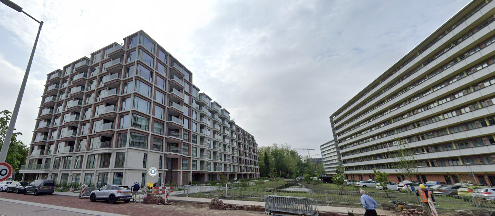
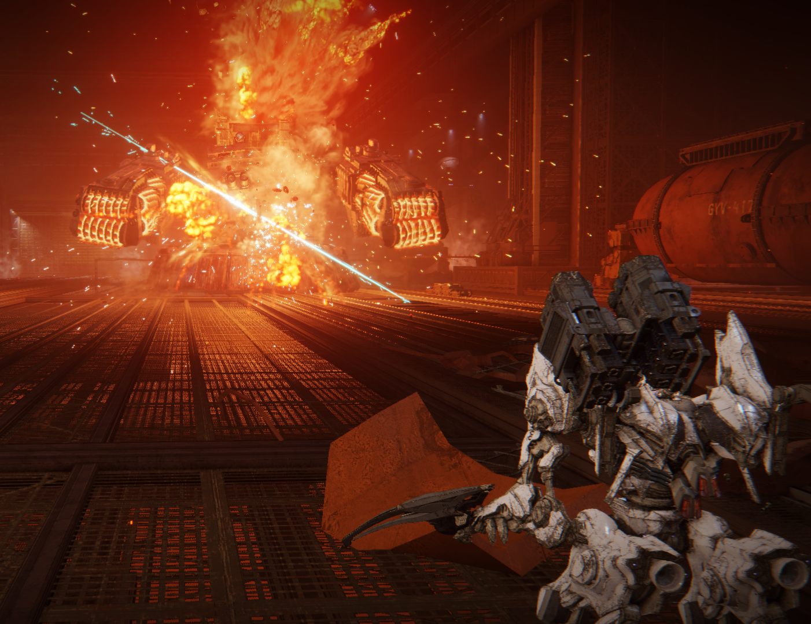

Over mij.Ik woon in Amsterdam en op mijn vorige school DENISE, zat ik de VMBO te doen waarna ik hier op het Mediacollege kwam om game developer te worden. |
|
Ik woon in Osdorperban. |
Woonplaats. |
|---|
Wat kan ik al? |
Ik ben goed in Engels, Nederlands en Spaans. Ik heb ook al eerder Github gebruikt en dingen met games gedaan. |
|---|
|
Ik speel sandbox-type en games die moeilijk of oldschool zijn graag. |
In mijn vrije tijd game ik graag.
|
|---|
Mijn top 10 games |
|
|---|